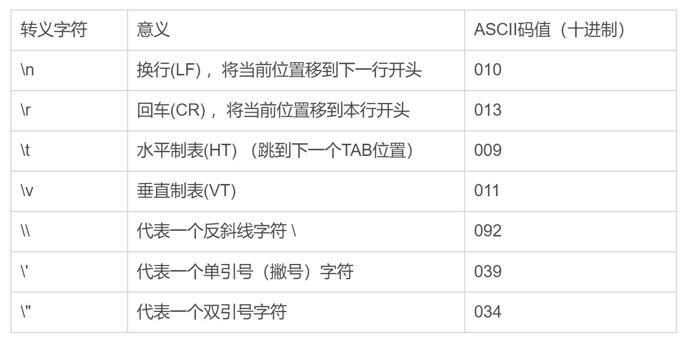
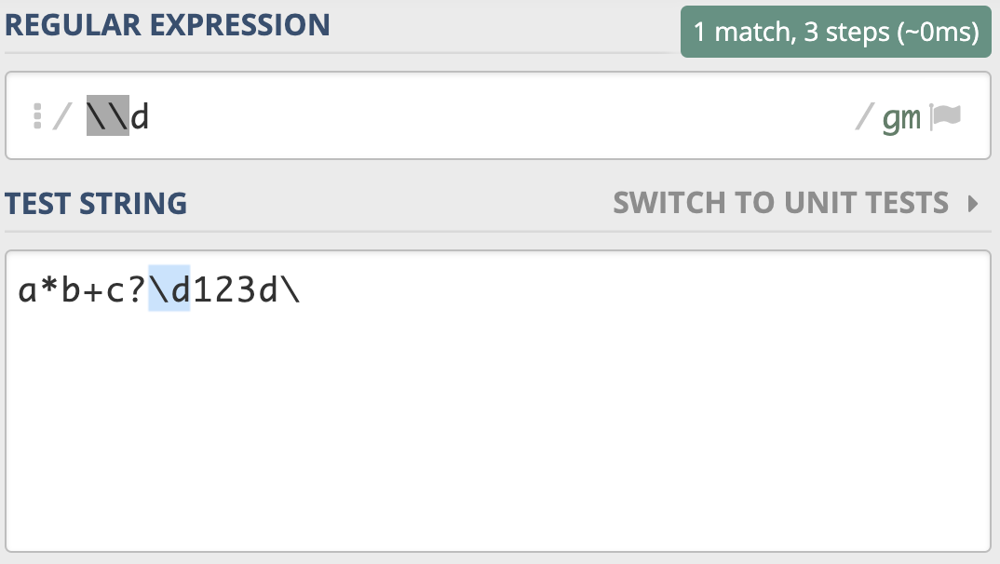
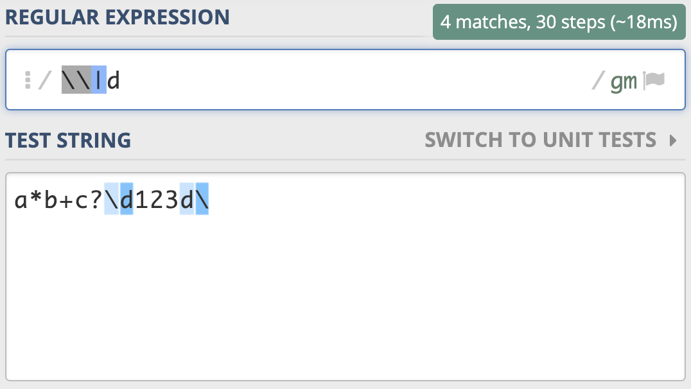
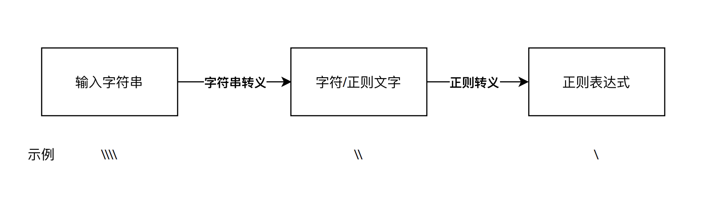
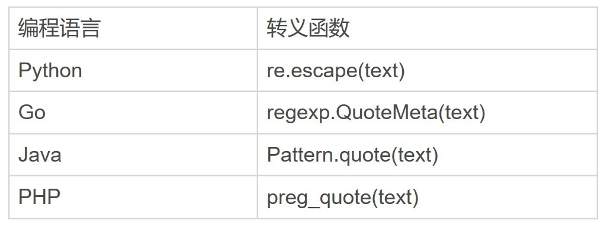
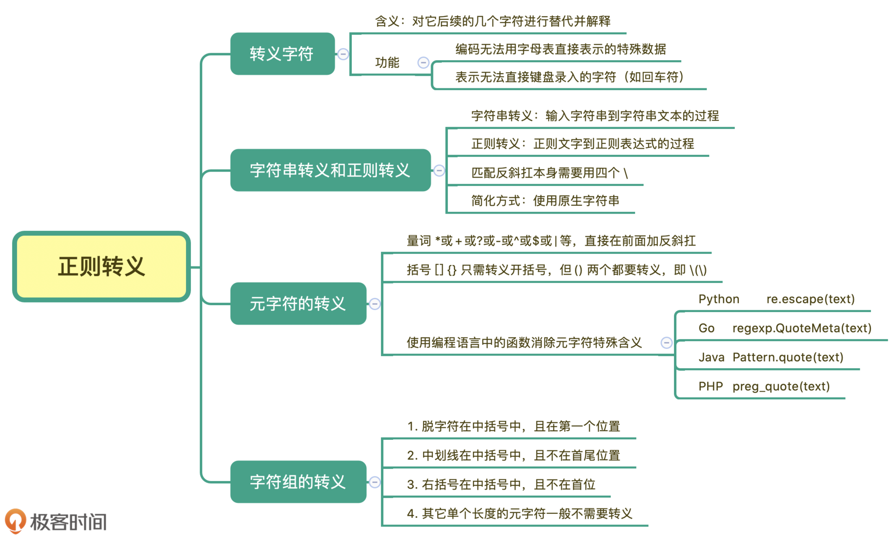

- 00 导读 余晟：我是怎么学习和使用正则的？.md.html
- 00 开篇词丨学习正则，我们到底要学什么？.md.html
- 01 元字符：如何巧妙记忆正则表达式的基本元件？.md.html
- 02丨量词与贪婪：小小的正则，也可能把CPU拖垮！.md.html
- 03 分组与引用：如何用正则实现更复杂的查找和替换操作？.md.html
- 04 匹配模式：一次性掌握正则中常见的4种匹配模式.md.html
- 05 断言：如何用断言更好地实现替换重复出现的单词？.md.html
- 06 转义：正则中转义需要注意哪些问题？.md.html
- 07 正则有哪些常见的流派及其特性？.md.html
- 08 应用1：正则如何处理 Unicode 编码的文本？.md.html
- 09 应用2：如何在编辑器中使用正则完成工作？.md.html
- 10 应用3：如何在语言中用正则让文本处理能力上一个台阶？.md.html
- 11 如何理解正则的匹配原理以及优化原则？.md.html
- 12 问题集锦：详解正则常见问题及解决方案.md.html
- 加餐 从编程语言的角度来理解正则表达式.md.html
- 结束语 使用正则提高你的人生效率.md.html
- 捐赠
06 转义：正则中转义需要注意哪些问题？
你好，我是伟忠。今天我来和你聊聊转义。转义对我们来说都不算陌生，编程的时候，使用到字符串时，双引号里面如果再出现双引号，我们就可以通过转义来解决。就像下面这样：
str = "How do you spell the word \"regex\"?"
虽然转义在日常工作中比较常见，但正则中什么时候需要转义，什么时候不用转义，在真正使用的时候可能会遇到这些麻烦。所以我们很有必要来系统了解一下正则中的转义。
转义字符
首先我们说一下什么是转义字符（Escape Character）。它在维基百科中是这么解释的：
在计算机科学与远程通信中，当转义字符放在字符序列中，它将对它后续的几个字符进行替代并解释。通常，判定某字符是否为转义字符由上下文确定。转义字符即标志着转义序列开始的那个字符。
这么说可能有点不好理解，我再来给你通俗地解释一下。转义序列通常有两种功能。第一种功能是编码无法用字母表直接表示的特殊数据。第二种功能是用于表示无法直接键盘录入的字符（如回车符）。
我们这节课说的就是第二种情况，转义字符自身和后面的字符看成一个整体，用来表示某种含义。最常见的例子是，C语言中用反斜线字符“\”作为转义字符，来表示那些不可打印的ASCII控制符。另外，在URI协议中，请求串中的一些符号有特殊含义，也需要转义，转义字符用的是百分号“%”。之所以把这个字符称为转义字符，是因为它后面的字符，不是原来的意思了。
在日常工作中经常会遇到转义字符，比如我们在shell中删除文件，如果文件名中有*号，我们就需要转义，此时我们能看出，使用了转义字符后，*号就能放进文件名里了。
rm access_log* # 删除当前目录下 access_log 开头的文件
rm access_log\* # 删除当前目录下名字叫 access_log* 的文件
再比如我们在双引号中又出现了双引号，这时候就需要转义了，转义之后才能正常表示双引号，否则会报语法错误。比如下面的示例，引号中的 Hello World! 也是含有引号的。
print "tom said \"Hello World!\" to the crowd."
下面是一些常见的转义字符以及它们的含义。

字符串转义和正则转义
说完了转义字符，我们再来看一下正则中的转义。正则中也是使用反斜杠进行转义的。
一般来说，正则中 \d 代表的是单个数字，但如果我们想表示成 反斜杠和字母d，这时候就需要进行转义，写成 \\d，这个就表示反斜杠后面紧跟着一个字母d。

刚刚的反斜杠和d是连续出现的两个字符，如果你想表示成反斜杠或d，可以用管道符号或中括号来实现，比如 \|d 或 [\d]。

需要注意的是，如果你想用代码来测试这个，在程序中表示普通字符串的时候，我们如果要表示反斜杠，通常需要写成两个反斜杠，因为只写一个会被理解成“转义符号”，而不是反斜杠本身。
下面我给出使用 Python3 来测试的情况，你可以看一下。
>>> import re
>>> re.findall('\\|d', 'a*b+c?\d123d\') # 字符串没转义"反斜杠"
File "<input>", line 1
re.findall('\\|d', 'a*b+c?\d123d\')
^
SyntaxError: EOL while scanning string literal
>>> re.findall('\\|d', 'a*b+c?\\d123d\\')
[]
看到这里，你内心是不是有很多问号？为什么转义了还不行呢？我们来把正则表达式部分精简一下，看看两个反斜杠在正则中是什么意思。
>>> import re
>>> re.findall('\\', 'a*b+c?\\d123d\\')
Traceback (most recent call last):
省去部分信息
re.error: bad escape (end of pattern) at position 0
我们发现，正则部分写的两个反斜杠，Python3 处理的时候会报错，认为是转义字符，即认为是单个反斜杠，如果你再进一步测试在正则中写单个反斜杠，你会发现直接报语法错误，你可以自行尝试。
那如何在正则中正确表示“反斜杠”呢？答案是写四个反斜杠。
>>> import re
>>> re.findall('\\\\', 'a*b+c?\\d123d\\')
['\\', '\\']
你可以想一下，为什么不是三个呢？后面的文本部分，也得要用四个反斜杠表示才是正确的么？到这里，你是不是发现，转义其实没那么简单。
我来给你详细解释一下这里面的过程，在程序使用过程中，从输入的字符串到正则表达式，其实有两步转换过程，分别是字符串转义和正则转义。
在正则中正确表示“反斜杠”具体的过程是这样子：我们输入的字符串，四个反斜杠 \\，经过第一步字符串转义，它代表的含义是两个反斜杠 \；这两个反斜杠再经过第二步正则转义，它就可以代表单个反斜杠 \了。

你可以用这个过程，推导一下两个和三个反斜杠的转换过程，这样你就会明白上面报错的原因了。
那在真正使用的时候，有没有更简单的方法呢？答案是有的，我们尽量使用原生字符串，在 Python 中，可以在正则前面加上小写字母 r 来表示。
>>> import re
>>> re.findall(r'\\', 'a*b+c?\\d123d\\')
['\\', '\\']
这样看起来就简单很多，因为少了上面说的第一次转换。
正则中元字符的转义
在前面的内容中，我们讲了很多元字符，相信你一定都还记得。如果现在我们要查找比如星号（*）、加号（+）、问号（?）本身，而不是元字符的功能，这时候就需要对其进行转义，直接在前面加上反斜杠就可以了。这个转义就比较简单了，下面是一个示例。
>>> import re
>>> re.findall('\+', '+')
['+']
括号的转义
在正则中方括号 [] 和 花括号 {} 只需转义开括号，但圆括号 () 两个都要转义。我在下面给了你一个比较详细的例子。
>>> import re
>>> re.findall('\(\)\[]\{}', '()[]{}')
['()[]{}']
>>> re.findall('\(\)\[\]\{\}', '()[]{}') # 方括号和花括号都转义也可以
['()[]{}']
在正则中，圆括号通常用于分组，或者将某个部分看成一个整体，如果只转义开括号或闭括号，正则会认为少了另外一半，所以会报错。
括号的转义示例，你可以参考这里：https://regex101.com/r/kJfvd6/1。
使用函数消除元字符特殊含义
我们也可以使用编程语言自带的转义函数来实现转义。下面我给出了一个在 Python里转义的例子，你可以看一下。
>>> import re
>>> re.escape('\d') # 反斜杠和字母d转义
'\\\\d'
>>> re.findall(re.escape('\d'), '\d')
['\\d']
>>> re.escape('[+]') # 中括号和加号
'\\[\\+\\]'
>>> re.findall(re.escape('[+]'), '[+]')
['[+]']
这个转义函数可以将整个文本转义，一般用于转义用户输入的内容，即把这些内容看成普通字符串去匹配，但你还是得好好注意一下，如果使用普通字符串查找能满足要求，就不要使用正则，因为它简单不容易出问题。下面是一些其他编程语言对应的转义函数，供你参考。

字符组中的转义
讲完了元字符的转义，我们现在来看看字符组中的转义。书写正则的时候，在字符组中，如果有过多的转义会导致代码可读性差。在字符组里只有三种情况需要转义，下面我来给你讲讲具体是哪三种情况。
字符组中需要转义的有三种情况
脱字符在中括号中，且在第一个位置需要转义：
import re re.findall(r’[^ab]‘, ‘^ab’) # 转义前代表”非” [‘^’] re.findall(r’[^ab]‘, ‘^ab’) # 转义后代表普通字符 [‘^’, ‘a’, ‘b’]
中划线在中括号中，且不在首尾位置：
import re re.findall(r’[a-c]‘, ‘abc-’) # 中划线在中间，代表”范围” [‘a’, ‘b’, ‘c’] re.findall(r’[a-c]‘, ‘abc-’) # 中划线在中间，转义后的 [‘a’, ‘c’, ‘-’] re.findall(r’[-ac]‘, ‘abc-’) # 在开头，不需要转义 [‘a’, ‘c’, ‘-’] re.findall(r’[ac-]‘, ‘abc-’) # 在结尾，不需要转义 [‘a’, ‘c’, ‘-’]
右括号在中括号中，且不在首位：
import re re.findall(r’[]ab]‘, ‘]ab’) # 右括号不转义，在首位 [‘]’, ‘a’, ‘b’] re.findall(r’[a]b]‘, ‘]ab’) # 右括号不转义，不在首位 [] # 匹配不上，因为含义是 a后面跟上b] re.findall(r’[a]b]‘, ‘]ab’) # 转义后代表普通字符 [‘]’, ‘a’, ‘b’]
字符组中其它的元字符
一般来说如果我们要想将元字符（.*+?()之类）表示成它字面上本来的意思，是需要对其进行转义的，但如果它们出现在字符组中括号里，可以不转义。这种情况，一般都是单个长度的元字符，比如点号（.）、星号（*）、加号（+）、问号（?）、左右圆括号等。它们都不再具有特殊含义，而是代表字符本身。但如果在中括号中出现 \d 或 \w 等符号时，他们还是元字符本身的含义。
>>> import re
>>> re.findall(r'[.*+?()]', '[.*+?()]') # 单个长度的元字符
['.', '*', '+', '?', '(', ')']
>>> re.findall(r'[\d]', 'd12\\') # \w，\d等在中括号中还是元字符的功能
['1', '2'] # 匹配上了数字，而不是反斜杠\和字母d
下面我来给你简单总结一下字符组中的转义情况，我们提到了三种必须转义的情况，其它情况不转义也能正常工作，但在实际操作过程中，如果遇到在中括号中使用这三个字符原本的意思，你可以都进行转义，剩下其它的元字符都不需要转义。
总结
好了，今天的内容讲完了，我来带你总结回顾一下。
正则中转义有些情况下会比较复杂，从录入的字符串文本，到最终的正则表达式，经过了字符串转义和正则转义两个步骤。元字符的转义一般在前面加反斜杠就行，方括号和花括号的转义一般转义开括号就可以，但圆括号两个都需要转义，我们可以借助编程语言中的转义函数来实现转义。另外我们也讲了字符组中三种需要转义的情况，详细的可以参考下面的脑图。

思考题
通过今天的学习，不知道你对转义掌握的怎么样了呢？再来一个例子加深一下你的理解吧，文本部分是反斜杠，n，换行，反斜杠四个部分组成。正则部分分别是1到4个反斜杠和字母n，我用Python3写了对应的示例，相应的查找过程是这样子的。
>>> import re
>>> re.findall('\n', '\\n\n\\')
['\n'] # 找到了换行符
>>> re.findall('\\n', '\\n\n\\')
['\n'] # 找到了换行符
>>> re.findall('\\\n', '\\n\n\\')
['\n'] # 找到了换行符
>>> re.findall('\\\\n', '\\n\n\\')
['\\n'] # 找到了反斜杠和字母n
例子虽然看上去简单，不过你能不能解释出这四个示例中的转义过程呢？
好了，今天的课程就结束了，希望可以帮助到你，也希望你在下方的留言区和我参与讨论，同时欢迎你把这节课分享给你的朋友或者同事，一起交流一下。
© 2019 - 2023 Liangliang Lee. Powered by gin and hexo-theme-book.